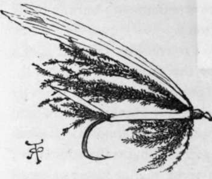
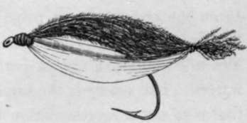

Chapter V. Fly Fishing In The Sea
Description
This section is from the book "Sea Fishing", by John Bickerdyke. Also available from Amazon: Sea Fishing.
Chapter V. Fly Fishing In The Sea
Fly fishing in the sea is a lottery. There is more of it than most people suppose, but there is no kind of sea fishing more uncertain. Occasionally, takes are reported which would fill the salmon or sea-trout fisher with wonderment; but the blank days are enough to make angels weep.
We need not concern ourselves to consider in what light a sea fish regards an artificial fly, or the thing that we call a fly. From the ordinary trout fisher's point of view there is no fly fishing in the sea, for there are, generally speaking, no natural flies to be imitated, except, perhaps, on some almost landlocked waters. The sea fly is the same sort of thing as the salmon fly ; that is to say, a representation of some marine insect or small fish, usually the latter. The most plentiful fish of our seas is, I imagine, the herring ; and it is when the surface-swimming fish are feeding on the herring or sprat fry—whitebait, sile, or britt, as they are variously termed—that the fly fisher has his chance.
The fly with which I have done most execution is an imitation of the young herring, which, according to Dr. Meyer's observations, measures about an inch and a half when about five months old. I will venture to call it the ' Whitebait' fly. Its most usual size and form are shown in the accompanying illustration. The over wing is a strip of white feather from a swan's quill, the under wing being some strands of peacock harl. The hackle is of the same material, and the body, which is well padded, is covered with broad, flat, real silver, tinsel. A few strands of harl form the tail. When the wing of this fly is nicely curved, the lure drawn rapidly through the water is a very fair resemblance of a bright shining whitebait, the silver tinsel representing its bright sides, and the green glistening harl its greenish back. What the white feather is for, I confess I don't know ; but it is added because white flies appear to have a special attraction for many kinds of sea fish. How these and similar flies are tied is illustrated and explained in detail on p. 83.
To still more accurately represent the herring fry I have had some of these flies dressed with the white wing underneath. We then have the white swan's wing, representing the belly ; the sides of silver, and the green back. The first-mentioned fly, however, seems to kill as well as the newer pattern. Where there is a breeze, the size shown in the illustration is most useful for bass, coalfish, mackerel, and small pollack ; but on a calm bright day when the water is clear, smaller flies are often more killing. In fact, the trout or salmon fisher can exercise just the same discretion in the sea with regard to the size of his fly as he does in fresh water, using a very large one on rough, dark days.
'Whitebait' Fly. No. 1.
'Whitebait' Fly. No. 2.
In whitebait fly No. 2 it will be noticed that I have tied the back and belly together, which renders it a closer imitation of the fry, but I doubt if its killing powers are in the least increased.
The term ' whitebait fly' is scientifically correct; because it was established beyond a question by Dr. Day that the admirable little fish which are caught at the mouth of the Thames and elsewhere, and are held in particular veneration at Greenwich, are the young of both sprats and herrings.
Fly fishing has special advantages over all other branches of angling. In the first place, it is deliciously clean. Secondly, it is simple, requiring nothing more than a fly and length of gut, in addition to the rod and running tackle. Thirdly, from its simplicity it is an inconspicuous tackle, there being no leads, swivels, float, nor spreaders to frighten the fish ; and the bait can be cast lightly on the water without the disturbance of a boat passing over or near the fish, which cannot be avoided when certain other methods are practised.
Generally speaking, all surface-swimming fish take the fly when, as I have said, they are feeding on the young herrings or sprats. Occasionally salmon, frequently sea trout in many districts, and still more often pollack, bass, and coalfish may be caught by the fly fisher. Herrings are not at all adverse to a white fly, and grey mullet may sometimes be caught in this way. There is a popular belief that an artificial fly is the best bait for mackerel, and every ' boy's mackerel line' which is sold at a seaside toyshop is decorated with three or four iron hooks the shanks of which are covered with red or white worsted with a strand or two from a swan's-wing feather roughly tied on. No doubt mackerel will occasionally take these flies ; but it is not very often one can keep for any length of time near these fish when they are shoaling and breaking the surface.- They appear for six or seven seconds, perhaps, and the angler may get a couple of casts into them and probably catch a fish; then down they go, to reappear a hundred yards away. Long before the boat can reach the spot they are away again, to break in quite another direction. If they can be lighted upon while shoaling in this way in any very small bay, then the fly fisher can whip them out one after the other and have grand sport. Sometimes a fly or two may be fixed on the ordinary whiffing line, in addition to the strip of mackerel-skin which is by far the best bait for the tail hook. Flies so placed catch a few fish during the day, but not many, and I have long written them down a fraud.
In addition to the fish I have mentioned, most of the bottom feeders—that is to say those of them which are in the habit of feeding on the whitebait—will take this fly if it is sunk low enough. I have occasionally caught cod, gurnard, haddock, and whiting on a white fly ; but that has been when I have been trailing or whiffing with it behind a boat for other fish, and for some reason or other have allowed the tackle to sink almost or quite to the bottom.
Continue to:
Tags
fishing, hooks, bait, fishermen, spanish mackerel, mackerel fishing